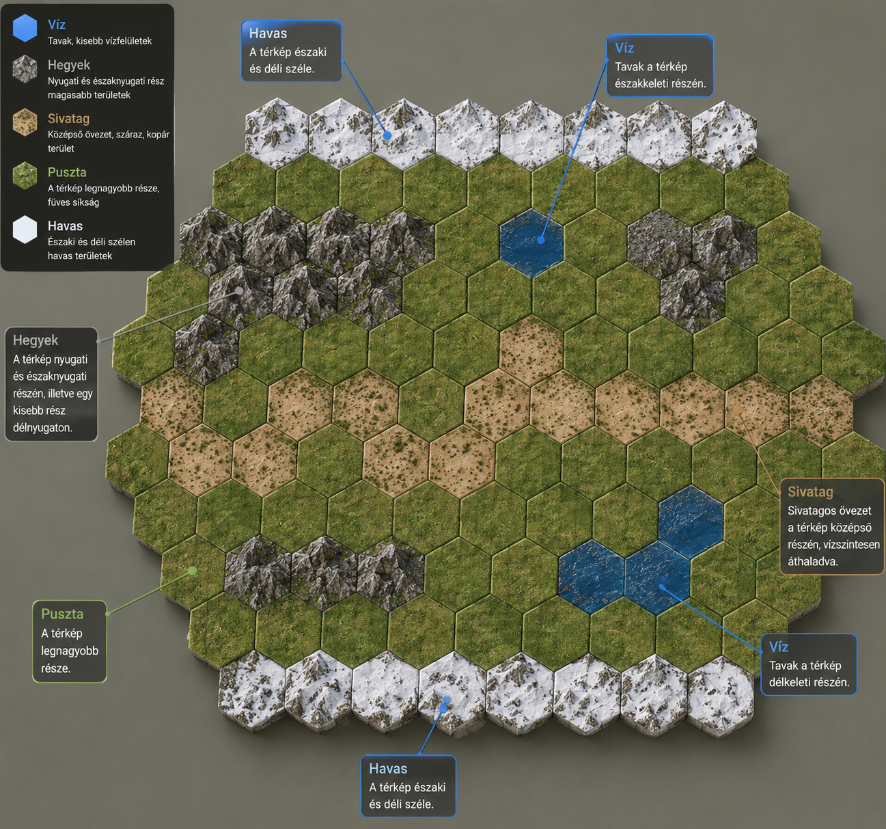

Meddig tudsz talpon maradni a senki földjén?
Az A világ széle egy stratégiai társasjáték, ahol a játékosok egy újonnan felfedezett bolygót próbálnak kolonizálni. A világ azonban veszélyes és kiszámíthatatlan, ezért a játékosoknak nyersanyagokat kell termelniük és túl kell élniük a folyamatos természeti katasztrófákat. A játék célja, hogy a bolygó sikeresen benépesüljön, ezért a játékosoknak kikötőket kell építeniük, hogy újabb emberek érkezhessenek a világra.
A szabályok egyszerűek, a túlélés viszont nehéz.

Minden épület ad valamilyen erőforrást. Minden körben eggyel többet termel.
Minden körben kötelező húzni egy katasztrófa kártyát.
A raktárban tárolt erőforrásokat nem érintik a katasztrófák.
A játékban hat különböző játékosszín használható: zöld, kék, fehér, fekete, piros és drapp.
+ Ember
+ Élelem
+ Szén
+ Olaj
Nyersanyagoat lehet tárolni.
A menekülés kulcsa.
A játék akkor ér véget, amikor minden ember számára épült egy kikötő.
Játéktábla mérete: 24 × 20 cm.